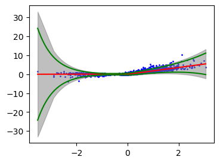
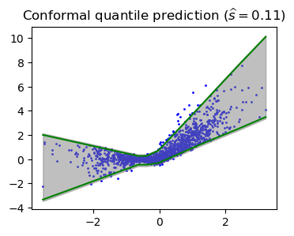

import numpy as np
import matplotlib.pyplot as plt
import scipy.stats as stats
import math
from scipy.stats import t
from sklearn.linear_model import LinearRegression
import torch
import torch.nn as nn
from torch import optim
from torch.utils.data import TensorDataset, DataLoader
rng = np.random.default_rng()Lecture 7 - Quantile Regression
Define useful functions
def generateX(n):
x = np.random.randn(n)
return(x)
def generateNonlinearY(x, sigma):
n = len(x)
eps1 = rng.gamma(2, 2, n) - 4
# eps1 = rng.standard_t(df=3, size=n)
eps2 = rng.normal(0, .5, n)
y = 2*np.maximum(x, 0) + sigma * ( (x + .5) * eps1 + eps2)
return y
def splitData(x, y, n1):
x1 = x[:n1]
y1 = y[:n1]
x2 = x[n1:]
y2 = y[n1:]
return x1, y1, x2, y2Define CQR interval function and residual interval function
# scores on holdout data, Q_alpha/2(x), Q_{1-alpha/2}(x)
def CQRInterval(scores, y_out_l_pred, y_out_u_pred, alpha):
n = len(scores)
t = np.quantile(scores, np.ceil((1-alpha)*(n+1))/n )
y_out_l = y_out_l_pred - t
y_out_u = y_out_u_pred + t
return np.hstack([y_out_l.reshape(-1, 1), y_out_u.reshape(-1, 1)])
# score = |Y-mu(x)|/sd(x)
def conformalResidueInterval(scores, mu, sigma, alpha):
n = len(scores)
t = np.quantile(scores, np.ceil((1-alpha)*(n+1))/n )
y_out_l = mu - t*sigma
y_out_u = mu + t*sigma
return np.hstack([y_out_l.reshape(-1, 1), y_out_u.reshape(-1, 1)])Define neural network for quantile regression and heteroskedastic regression
class NNet(nn.Module):
def __init__(self, input_dim, hidden_dim):
super(NNet, self).__init__()
self.layer1 = nn.Linear(input_dim, hidden_dim)
self.layer2a = nn.Linear(hidden_dim, 1)
self.layer2b = nn.Linear(hidden_dim, 1)
def forward(self, x):
x = self.layer1(x)
x = torch.relu(x)
out1 = self.layer2a(x).squeeze()
out2 = self.layer2b(x).squeeze()
return out1, out2 # this outputs estimates of Q_alpha and Q_(1-alpha/2)
def quantileLoss(y_out_l, y_out_u, y, alpha):
# this is the row alpha function for both alpha/2 and (1-alpha/2)
lower_loss = torch.max( (alpha/2)*(y - y_out_l), (alpha/2-1)*(y - y_out_l) )
upper_loss = torch.max( (1-alpha/2)*(y - y_out_u), (-alpha/2)*(y - y_out_u) )
return torch.mean(lower_loss + upper_loss)
def heteroskedLoss(mu, log_nu, y):
return torch.mean( (y - mu)**2 / (2*torch.exp(log_nu)**2) + log_nu )Experiment parameters
n = 2000
ntrain = 500
sigma = .2
alpha = 0.05 # 95% prediction interval for Y_newExperiment 1
Generate same data and train neural network for heteroskedastic regression
x = generateX(n)
y = generateNonlinearY(x, sigma)
xtrain, ytrain, xtest, ytest = splitData(x, y, ntrain)
n1 = int(ntrain/2)
xtrain1, ytrain1, xtrain2, ytrain2 = splitData(xtrain, ytrain, n1)
## train neural network on first half of training data
x_train1 = torch.tensor(xtrain1.reshape(-1, 1), dtype=torch.float32)
y_train1 = torch.tensor(ytrain1, dtype=torch.float32)
train_data = TensorDataset(x_train1, y_train1)
train_loader = DataLoader(dataset=train_data, batch_size=20, shuffle=True)
model = NNet(1, 20)
lr = 0.1
epochs = 150
optimizer = optim.Adam(model.parameters(), lr=lr)
for epoch in range(epochs):
epoch_loss = 0
for x_batch, y_batch in train_loader:
optimizer.zero_grad()
mu, log_nu = model(x_batch)
loss = heteroskedLoss(mu, log_nu, y_batch)
loss.backward()
optimizer.step()
epoch_loss += loss.item()
if epoch % 20 == 0:
print('epoch', epoch, 'loss', f"{epoch_loss:.3}")epoch 0 loss 12.0
epoch 20 loss -2.6
epoch 40 loss -2.36
epoch 60 loss -5.38
epoch 80 loss -3.36
epoch 100 loss -3.71
epoch 120 loss -5.45
epoch 140 loss -4.36## compute non-conformity scores on second half of training data
## and prediction intervals on test data
x_train2 = torch.tensor(xtrain2.reshape(-1, 1), dtype=torch.float32)
mu_2, log_nu_2 = model(x_train2)
mu_2 = mu_2.detach().numpy()
log_nu_2 = log_nu_2.detach().numpy()
nu_2 = np.exp(log_nu_2)
scores = np.abs(ytrain2 - mu_2)/nu_2
##np.maximum(ytrain2 - y_out_u2, y_out_l2 - ytrain2)
x_test = torch.tensor(xtest.reshape(-1, 1), dtype=torch.float32)
mu_pred, log_nu_pred = model(x_test)
mu_pred = mu_pred.detach().numpy()
log_nu_pred = log_nu_pred.detach().numpy()
nu_pred = np.exp(log_nu_pred)
intervals = conformalResidueInterval(scores, mu_pred, nu_pred, alpha)
# mu_pred +/- s_hat * nu_pred, where s_hat is the (1-alpha)*(n+1)/n quantile of scoress_hat = np.quantile(scores, np.ceil((1-alpha)*(n+1))/n )
s_hat # this is very far from the normal quantile 1.96, which is expected given that data is not normal2.6316759600048063## plot f
sorted_ix = np.argsort(xtest)
xgrid = xtest[sorted_ix]
ygrid = ytest[sorted_ix]
interval_grid = intervals[sorted_ix, :]
xlinspace = np.linspace(xgrid.min(), xgrid.max(), 1000)
xlinspace_torch = torch.tensor(xlinspace, dtype=torch.float32).reshape(-1,1)
mean_linspace, logvar_linspace = model(xlinspace_torch)
mean_linspace = mean_linspace.squeeze().detach().numpy()
sd_linspace = np.exp(logvar_linspace.squeeze().detach().numpy())
plt.figure(figsize=(4, 3))
plt.scatter(xgrid, ygrid, color='blue', label='Data Points', s=1)
plt.plot(xlinspace, mean_linspace, 'r-')
plt.plot(xlinspace, mean_linspace + 1.96 * sd_linspace, 'g-')
plt.plot(xlinspace, mean_linspace - 1.96 * sd_linspace, 'g-')
plt.fill_between(xgrid, interval_grid[:, 0], interval_grid[:, 1], color='gray', alpha=0.5, label='Prediction Interval')
# plt.title('Conformal prediction with studentized residuals ' r'$(\widehat{{s}} = {:.2f})$'.format(s_hat))
cov_test = [1 if ytest[i] >= intervals[i, 0] and ytest[i] <= intervals[i, 1] else 0 for i in range(len(ytest))]
print('Percent covered on test data: ', np.mean(cov_test))Percent covered on test data: 0.9493333333333334Experiment 2
Generate data and train neural network for quantile regression
x = generateX(n)
y = generateNonlinearY(x, sigma)
xtrain, ytrain, xtest, ytest = splitData(x, y, ntrain)
n1 = int(ntrain/2)
xtrain1, ytrain1, xtrain2, ytrain2 = splitData(xtrain, ytrain, n1)
## train neural network on first half of training data
x_train1 = torch.tensor(xtrain1.reshape(-1, 1), dtype=torch.float32)
y_train1 = torch.tensor(ytrain1, dtype=torch.float32)
train_data = TensorDataset(x_train1, y_train1)
train_loader = DataLoader(dataset=train_data, batch_size=20, shuffle=True)
model = NNet(1, 10)
lr = 0.1
epochs = 150
optimizer = optim.SGD(model.parameters(), lr=lr)
for epoch in range(epochs):
epoch_loss = 0
for x_batch, y_batch in train_loader:
optimizer.zero_grad()
y_out_l, y_out_u = model(x_batch)
loss = quantileLoss(y_out_l, y_out_u, y_batch, alpha)
loss.backward()
optimizer.step()
epoch_loss += loss.item()
if epoch % 20 == 0:
print('epoch', epoch, 'loss', f"{epoch_loss:.3}")epoch 0 loss 9.08
epoch 20 loss 1.12
epoch 40 loss 0.939
epoch 60 loss 0.821
epoch 80 loss 0.769
epoch 100 loss 0.705
epoch 120 loss 0.683
epoch 140 loss 0.684Create CQR intervals
## compute non-conformity scores on second half of training data
## and prediction intervals on test data
x_train2 = torch.tensor(xtrain2.reshape(-1, 1), dtype=torch.float32)
y_out_l2, y_out_u2 = model(x_train2)
y_out_l2 = y_out_l2.detach().numpy()
y_out_u2 = y_out_u2.detach().numpy()
scores = np.maximum(ytrain2 - y_out_u2, y_out_l2 - ytrain2)
# CQR scores max(y-Qalpha/2, Q1-alpha/2 - y)
x_test = torch.tensor(xtest.reshape(-1, 1), dtype=torch.float32)
y_out_l_pred, y_out_u_pred = model(x_test)
y_out_l_pred = y_out_l_pred.detach().numpy()
y_out_u_pred = y_out_u_pred.detach().numpy()
intervals = CQRInterval(scores, y_out_l_pred, y_out_u_pred, alpha)
# s_hat = (1-alpha)*(n+1)/n quantile of scores
# output: y_out_l_pred - s_hat, y_out_u_pred + s_hats_hat = np.quantile(scores, np.ceil((1-alpha)*(n+1))/n )
s_hat0.1086025067299507## plot prediction intervals
sorted_ix = np.argsort(xtest)
xgrid = xtest[sorted_ix]
ygrid = ytest[sorted_ix]
xlinspace = np.linspace(xgrid.min(), xgrid.max(), 1000)
xlinspace_torch = torch.tensor(xlinspace, dtype=torch.float32).reshape(-1,1)
lower, upper = model(xlinspace_torch)
lower = lower.squeeze().detach().numpy()
upper = upper.squeeze().detach().numpy()
plt.figure(figsize=(4, 3))
plt.plot(xlinspace, lower, 'g-')
plt.plot(xlinspace, upper, 'g-')
interval_grid = intervals[sorted_ix, :]
plt.scatter(xgrid, ygrid, color='blue', label='Data Points', s=1)
plt.fill_between(xgrid, interval_grid[:, 0], interval_grid[:, 1], color='gray', alpha=0.5, label='Prediction Interval')
plt.title('Conformal quantile prediction ' r'$(\widehat{{s}} = {:.2f})$'.format(s_hat))Text(0.5, 1.0, 'Conformal quantile prediction $(\\widehat{s} = 0.11)$')
# checking empirical coverage
cov_test = [1 if ytest[i] >= intervals[i, 0] and ytest[i] <= intervals[i, 1] else 0 for i in range(len(ytest))]
print('Percent covered on test data: ', np.mean(cov_test))Percent covered on test data: 0.9593333333333334